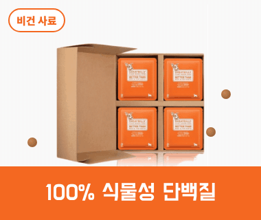

카메라 무빙, 룩, 샷 크기, 앵글, 조명, 스크립트 구조를 움직이는 미리보기로 보고 고르세요. 담은 카드는 하나의 프롬프트로 합쳐지고, 예시 영상 컨셉과 비슷한 유튜브 영상까지 이어 줍니다.
쓰는 도구에 따라 두 묶음으로 나눴어요. 세트를 담으면 주문서에서 빼거나 더할 수 있습니다.

그래잇빌리 100% 식물성 단백질"멋지게 만들어 줘"보다 무엇을 고정하고 무엇을 움직일지 나눠 지시해야 제품 모양 변형, 조명 튐, 방향 뒤집힘이 줄어듭니다. 주문서는 이 7단계 순서로 프롬프트를 만듭니다.
NolanX AI가 공개한 영상 제작 스킬 20개를 용도별로 묶어 요약했어요.
이 사이트의 카드는 사람이 보는 화면 말고도, AI가 바로 읽을 수 있는 파일로 같이 공개돼 있어요. ChatGPT나 Claude에게 이 사이트를 "참고 자료"로 주면 카드 코드(M01, S05 등)를 근거로 프롬프트를 짜 줍니다.
https://ai-video-reference-kr.netlify.app/cards.json카드마다 따로 정리한 페이지가 있어요. 설명, 이럴 때 쓰는 법, 바로 복사할 프롬프트를 한 페이지에서 볼 수 있습니다.